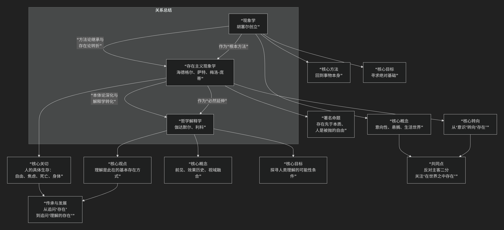

比较哲学
“系统哲学”与“结构主义哲学”
结构主义和系统哲学的关系，可以概括为：两者是20世纪中叶几乎同时兴起、共享“整体论”和“关系思维”内核的思想双子星，但它们在起源、焦点和方法论上存在关键分野，最终走向了不同的道路。
它们共同反对当时主流的“原子论”和“机械还原论”，但提出了不同的替代方案。
下图从多个维度概括了两者的关系与差异：

核心共同点：整体论与关系思维
整体先于部分：两者都认为，不能通过孤立地研究组成部分来理解整体。整体的属性（无论是语言的意义、社会的功能，还是一个生态系统的平衡）源自组成部分之间的关系和组织方式。
关注关系与网络：都将研究对象视为一个由相互关联的要素构成的网络或系统。要素本身由其在网络中的位置和与其他要素的关系所定义。
反对线性因果，强调相互依存：认为因果关系更多是网络中的循环、互动与反馈，而非简单的A→B。
关键差异：从静态“结构”到动态“系统”
尽管共享基础，它们的走向截然不同，具体差异如下：
维度 |
结构主义 |
系统哲学 / 系统论 |
|---|---|---|
思想根源 |
语言学（索绪尔）、人类学、心理学 |
生物学（贝塔朗菲）、工程学、控制论、信息论 |
核心隐喻 |
语言、语法 |
有机体、机器、生态系统 |
焦点 |
静态的、共时的深层结构。探寻隐藏的、无意识的、 |
动态的、历时的功能系统。 |
时间性 |
强调 “共时性” ，将系统视为在特定时间切片上的稳定关系架构。 |
强调**“历时性”** ，时间、过程、变化、演化是核心关切。 |
核心概念 |
能指/所指、二元对立、转换规则、深层结构/表层结构 |
输入/输出、反馈（正/负）、熵/负熵、自组织、涌现、边界、控制论 |
方法倾向 |
定性分析、阐释学。通过符号学、语言学方法解读文化文本， |
跨学科、建模、数学化。 |
目标 |
解释意义如何产生。 |
理解并管理复杂性。解决现实世界的复杂问题 |
对人的看法 |
人由结构决定。主体是文化、语言、心理结构的承载者 |
人是复杂适应系统。人是具有能动性的、能与环境互动的反馈系统， |
代表性人物 |
索绪尔、列维-斯特劳斯、拉康、阿尔都塞 |
路德维希·冯·贝塔朗菲、诺伯特·维纳、 |
关系演变与思想史定位
并行发展与相互影响：它们在20世纪40-60年代几乎同时达到鼎盛，都代表了当时的科学精神向人文社科领域的渗透。系统论的控制论思想曾间接影响了一些结构主义者（如拉康对交流模式的兴趣）。
结构主义是系统哲学的“人文近亲”：系统哲学更“硬”，更具科学和工程色彩；结构主义更“软”，更具人文和阐释色彩。可以说，结构主义是系统思维在人文领域的一种特殊表现形式，但因其固守“静态结构”和“决定论”而有所局限。
后结构主义对两者的超越：正是由于结构主义对稳定、封闭、决定论结构的强调，催生了其对立面——后结构主义（德里达、福柯、德勒兹）。后结构主义批判结构的封闭性，强调差异、流变、开放和权力的生产性。有趣的是，后结构主义在很多方面反而更接近系统哲学，尤其是复杂系统理论（如德勒兹的“块茎”思想与网络、自组织概念高度共鸣）。系统哲学天然地接纳动态、开放和非平衡。
总结
结构主义与系统哲学是整体论家族中的一对兄弟：
结构主义 像是这个家族中研究“解剖学”和“语法”的学者。它拿起一个文化对象（如神话、亲属关系），像解剖一具静止的标本或分析一句凝固的句子一样，寻找其内部稳定的关系骨架。它追问：“是哪些隐秘的规则，使得这个意义得以可能？”
系统哲学/系统论 则像是这个家族中研究“生理学”和“生态学”的工程师。它观察一个活生生的有机体、一个城市或一个市场，关注其如何消化、呼吸、反馈、适应和演化。它追问：“这个系统如何运作、维持并适应变化？我能否影响它的过程？”
简而言之，结构主义揭示了文化的“静态解剖结构”，而系统哲学提供了理解世界“动态生理过程”的框架。 前者最终导向了对深层秩序的阐释，后者则导向了对复杂性的管理与塑造。理解它们的异同，是理解二十世纪思想从“实体思维”转向“关系思维”这一伟大革命的关键。
系统哲学（系统论）的对立面
与系统哲学（系统论）构成最直接、最深刻对立的，是那些强调个体性、偶然性、不可化约性、解构与差异的哲学流派。
我们可以从以下几个层面来理解这种对立：
核心对立面：对“系统”本身的反叛
系统哲学的核心是整体论、关系网络、稳定秩序、功能与模型化。与它构成张力的哲学，则从不同角度挑战这些核心理念：
存在主义与现象学（尤其是其强调个体的一面）
对立点：系统 vs. 个体存在。
系统哲学将个体视为更大系统中的一个节点或功能组件，其意义由在系统中的位置和关系决定。存在主义则高扬个体的绝对独特性、自由、选择与责任，认为“存在先于本质”，反对将人还原为任何系统（无论是社会系统、生物系统还是概念系统）的预定产物。现象学则强调回到“事物本身”和个体的“生活世界”，反对用任何先验的、抽象的系统框架来覆盖直接的经验。
后结构主义 / 解构主义
对立点：稳定的结构 vs. 流动的差异。
这是最激进、最根本的对立。系统论追求发现或建构一个可描述、可预测的稳定秩序。而后结构主义思想家（如德里达、福柯、德勒兹与加塔利）则认为：
德里达：系统总有“裂缝”，意义在“延异”中无限延后，不存在封闭、自足的系统。
德勒兹：反对层级化、中心化的“树状”系统模型，推崇开放、去中心化、动态连接的“块茎”模型。他们强调生成、流变、去疆域化，与系统论对平衡、稳态、边界和控制的研究目标背道而驰。
实用主义（特别是其激进经验主义版本）
对立点：抽象模型 vs. 具体情境。
系统哲学倾向于建立普遍化的模型。实用主义（如威廉·詹姆斯、约翰·杜威）则怀疑宏大抽象的系统，强调知识源于具体的、流动的经验和实践情境，真理是在特定情境中“行得通”的东西，反对用固定的系统框架切割丰富的现实。
方法论个人主义与原子论
对立点：整体优先 vs. 个体优先。
这是社会科学哲学中的直接对立。系统哲学认为整体性质不能还原为个体之和。而方法论个人主义（如波普尔、哈耶克的部分思想）认为，社会现象必须最终通过对个体行为、信念和选择的分析来解释，反对将“社会系统”等整体作为实在的分析单位。
总结：一幅思想光谱
我们可以这样勾勒这幅对立图景：
系统哲学（系统论）阵营：强调整体、关系、稳定、秩序、模型、控制、功能、等级（结构）。
反系统 / 后系统哲学阵营：强调个体、存在、自由、差异、流变、解构、情境、去中心化。
真正的张力在于： 是将世界看作一个可被认知、描述、甚至管理的、由相互关联部分构成的有机整体（系统观），还是看作一个由独一無二的个体、不可化约的事件、永远延异的意义和永恒的生成变化所构成的、无法被任何总体性框架捕捉的开放场域（后结构主义/存在主义观）。
所以，与系统哲学相对立的，并非某个特定的政治学说，而是现代哲学中那股怀疑总体性、反抗体系化、捍卫偶然性与个体性的强劲思想脉络。